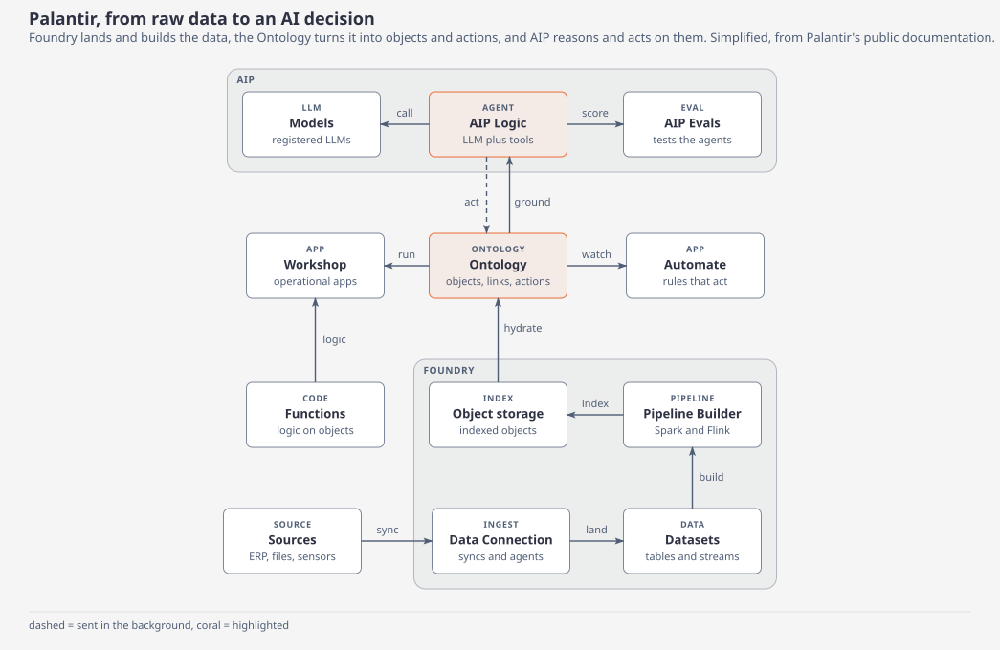
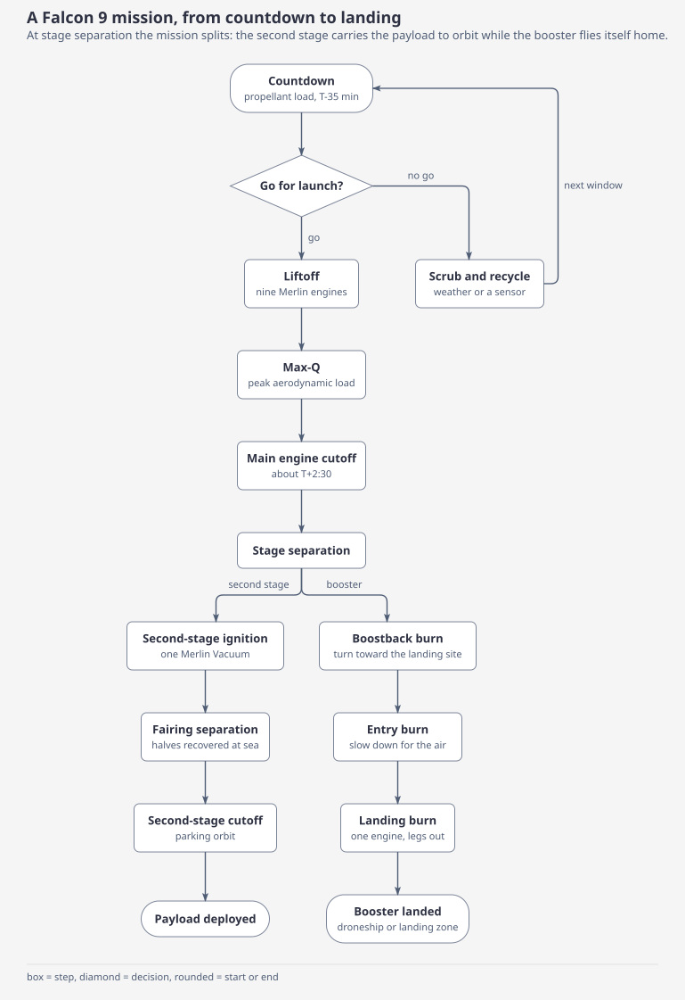
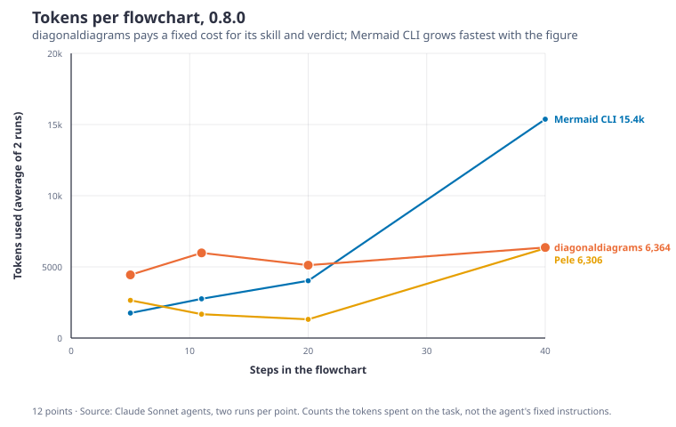
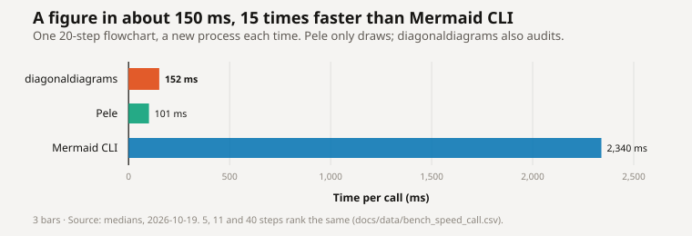
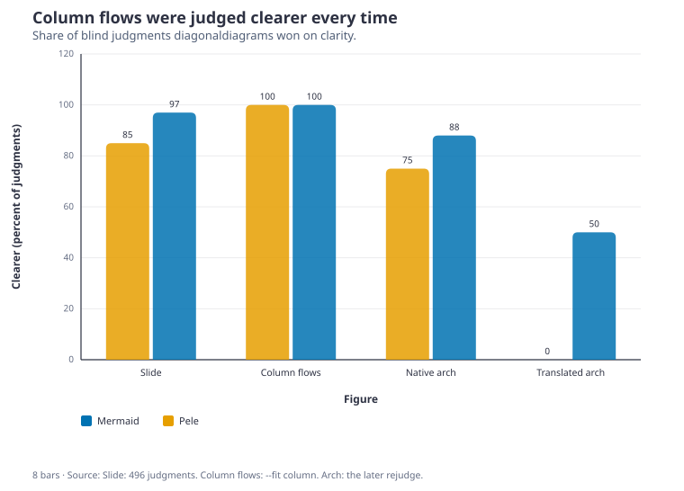

Paste this to your agent. It follows the install skill: it downloads the repo, checks that it works, and copies the drawing skill into its skills folder.
Install diagonaldiagrams from https://github.com/lucas19919/diagonaldiagrams
An AI agent describes a diagram in text. diagonaldiagrams draws it as an SVG and checks it for mistakes.

1. Describe. The agent writes a short description of the diagram, in Mermaid, JSON or CSV.
2. Draw. diagonaldiagrams lays it out and saves an SVG file.
3. Check. It looks for text on top of text, arrows through boxes, and words that don't fit their shape. It prints one line of JSON: all clear, or what's wrong and how to fix it. The agent reads that line instead of a screenshot.
$ diagonaldiagrams mermaid flow.mmd -o flow.svg
{"ok": true, "svg": "flow.svg", ..., "items": 3,
"layout": ["row 1: Start", "row 2: Ready? (decision)", "row 3: Done"]}
Real output for a three-box flowchart, with the file paths shortened. If something is wrong, ok is false and each problem has a fix.
Pick the way that matches how you use your agent. Needs Python 3.11 or newer.
Paste this to your agent. It follows the install skill: it downloads the repo, checks that it works, and copies the drawing skill into its skills folder.
Install diagonaldiagrams from https://github.com/lucas19919/diagonaldiagrams
Adds the tool, and the instructions Claude uses to draw with it.
/plugin marketplace add lucas19919/diagonaldiagrams /plugin install diagonaldiagrams@diagonaldiagrams
Installs the diagonaldiagrams command from PyPI. Your agent can run it from any terminal.
pip install diagonaldiagrams
Any app that supports MCP can call diagonaldiagrams as a tool. Add this to the app's MCP settings. It needs uv, which runs the package from PyPI. The server is listed in the official MCP registry as io.github.lucas19919/diagonaldiagrams.
{
"mcpServers": {
"diagonaldiagrams": {
"command": "uvx",
"args": ["diagonaldiagrams", "mcp"]
}
}
}
Download the .mcpb file from the latest release and open it with Claude Desktop. No settings to edit, but Python 3.11 or newer must already be installed.
Design, TSMC, memory on one interposer, a rack builder, then the clouds that buy it.

Data lands, the Ontology is built, and a model writes an action back.

Countdown, liftoff, separation. The booster flies home. The second stage goes on to orbit.

At 40 steps, 6.4k tokens. Mermaid CLI climbs to 15.4k with screenshot debugging loops. Pele costs least, but performs no collision check.
diagonaldiagrams 0.8.0 benchmarked against Mermaid CLI and Pele on 2026-10-19 across eight independent agent runs (from 5 to 40 steps).
Cost stays between 4.4k and 6.4k as diagrams grow. Mermaid CLI spirals up to 15.4k attempting screenshot visual fixes.
152 ms median from bytecode for a 20-step flowchart. Renders SVG and audits text/arrow collisions in one pass.
All 24 benchmark figures passed collision audit. Judged clearer in 100% of README column layouts and 85%+ on slides.



| Framework | Tokens (8 flows) | Tool calls | Screenshots | Total time | Layout audit |
|---|---|---|---|---|---|
| diagonaldiagrams 0.8 | 43.8k flat across scale | 69 calls | 9 shots | 7 min | 24 / 24 verified |
| Pele | 23.9k reads no skill | 57 calls | 18 shots | 5 min | No collision check |
| Mermaid CLI | 47.8k climbs with size | 79 calls | 32 shots | 13 min | Manual screenshot loops |
--fit column.bench/.